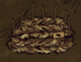
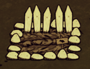
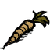
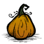
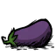
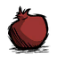
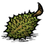
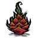

from Seeds

"Fertilizer" redirects here. For a list of items that can be used as fertilizer, see Category:Fertilizer.
| “ | Daucuscarots. Edible and delicious. | ” |
| –Wickerbottom | ||
Wilson with 6 Improved Farms
Farms are made by creating Basic or Improved Farms which are fertile patches of ground where Vegetables can be grown. Once built, Seeds can be planted in them which will grow into random vegetables, or Crop Seeds for desired crops. Some Vegetables from regular Seeds grow more frequently than others (see table, below). Farms can be used to grow 20-30 vegetables before they lose fertility and require additional fertilizing. Crops will only grow during the day time when the temperature is above 5 degrees; all other time the growth stops. When temperature is above 28 degrees crops grow 100% faster; when it's raining crops grow up to 300% (depending on precipitation rate) faster. This means, that when it's hot and heavy raining crops grow up to 400% faster.
|  |  |
| Basic Farm | Improved Farm |
| 8 Grass, 4 Manure, 4 Logs Growth Time: 40 daylight hours 20 uses before re-fertilizing | 10 Grass, 6 Manure, 4 Stone Growth Time: 20 daylight hours 30 uses before re-fertilizing |
Specific vegetables can be grown in Farms by using Crop Seeds. These seeds are produced by feeding a Bird imprisoned in a Birdcage any vegetable or fruit; except for Mandrakes or Berries. The Bird will drop 1 or 2 Crop Seeds of the selected type, plus an occasional regular Seeds (total of 3 possible seeds). Once planted these seeds will only produce the crop they came from.
| Item | Name | Chance from Seeds |
|---|---|---|
|
| Corn | 31.6% |
|  | Carrot | 31.6% |
|  | Pumpkin | 10.5% |
|  | Eggplant | 10.5% |
|  | Pomegranate | 5.25% |
|  | Durian | 5.25% |
|  | Dragon Fruit | 5.25% |
Improved Farms; the depleted one is on the right
Guano substitutes 15, one Manure substitutes 10, and one Rot/Rotten Egg substitutes 2.5 daylight hours. Thus Basic Farms need 3 Guano, 4 Manure or 16 Rot / Rotten eggs, and Improved Farms need only 2 Guano, 2 Manure or 8 Rot / Rotten Eggs to fully grow a newly planted crop. Fertilizers do not advance crop growth when it's below 0 degrees in Winter, and using a fire to warm the area will not change this.
Fertilizers are also needed once a Farm loses fertility, which happens after 20-30 uses depending on the type of Farm. When a Farm is depleted, it will turn a lighter shade of brown and cannot be used for growing anything until fertilizer is added. Guano will rejuvenate a Farm for 12 additional uses, Manure for 10 and Rot or Rotten Eggs will only provide 2.
Fertilizers are also needed for transplanted plants. Berry Bushes and Grass Tufts that are dug up with a shovel and replanted must be fertilized before they will start to produce again. After a Berry Bush has been harvested for 3-5 times or a Grass Tuft for 20 times, they will require additional fertilizer. Replaced Saplings and Bushes and Grass that grow naturally never need to be fertilized.
.png.html)
With Pinecones, you can plant new Evergreens near your camp too. This will provide a constant and renewable source of Logs that will be active in both seasons. Caution should be taken with any spawning Treeguards though.
Planting these items close together will make them easy to quickly gather, however this leaves them vulnerable to lightning strikes, which can set the entire patch ablaze. To counter this, plants can be placed in small groups with gaps between them so that if one catches fire it will only take a few other plants with it. Additionally, Lightning Rods can be built which will help prevent fires.
Example of a Lureplant farm on top of Cobblestones
The Leafy Meat can be either eaten, given to Pigs to befriend them or most importantly given to a caged bird for a fresh Egg . Once harvested you'll have to wait for 2 days before the Lureplant spawns a new one. To take it without having to kill the Lureplant, just unequip any weapon and then click on the Lureplant.
Additionally, it can be used with Wickerbottom to farm a lot of Morsels and Feathers . Make a path with hard turf to the Lureplant and around it, but let enough soft turf for it's Eyeplants to spawn around you, but not be able to attack you. Read Wickerbottom's "Birds of the World" book and let the Eyeplants eat the birds that spawn. Then immediately kill the Lureplant and get your loot.
Since Lureplants are inactive in winter, you won't be able to get the Leafy Meat during that time.
A simple Slime Farm with one single mound.
To farm it, you have to explore the caves and find one or more Slurtle Mounds grouped together, preferably under a light shaft. Once you do that, wall the mound(s) to prevent the Slurtles or Snurtles from wandering off, then build a Chest and place it near the mound(s). Fill the chest with excessive Rocks or other minerals. When the slugs come out and there are no minerals in the ground they will aim for the chest. They will start biting the chest and make the minerals bounce out, then after enough of them are on the ground they'll start eating them and produce slime in the process.
With this technique you'll ensure that all the slime is in one place and not scattered around the area of the mound and the walls will keep the slugs from eating minerals you don't want them to eat (either wall them against the border of the map where there's a little space you can cross but they can't, or place a Hay Wall that can easily be destroyed and replaced anytime you want to enter or exit.)
Ranching is the farming of animals such as Butterflies, Pigs, and Beefalo. Generally ranching can only be done with animals that can respawn. Each type of animal requires its own way of ranching.
Butterfly farms can be produced by catching butterflies in a Bug Net. Once captured, they can be planted as flowers anywhere. Flowers require no maintenance and can spawn additional Butterflies as soon as they are planted. When the Butterfly population is high enough they can be killed for their Wings.
Moleworms can be farmed by releasing several placed Moleworms in an enclosed area. You can do this by destroying a Burrow with a shovel, knocking the Moleworm out with a hammer, and picking it up. Build an enclosed wall somewhere in your world and release the Moleworm within it, and after a random amount of time has passed, the Moleworm will reburrow. You may then catch the Moleworm when it surfaces by baiting it with minerals, and killing it. A Moleworm will respawn from the burrow in the same way a rabbit does.
A Catcoon may be farmed if you want to gather random minerals and objects over time. This can be done by creating an enclosed wall and trapping several Catcoon within it. You may do this by finding a Hollow Stump, in which a Catcoon should be spawned near by. Then, befriend the Catcoon and take it back to the enclosed wall. Leave the Catcoon inside and at random times it will spit-up various items and objects which may prove to be useful. You want to gather as many Catcoon as possible for the best resulting effect of the farm as if a catcoon dies, it can only respawn 8 more times.
Best way to farm Bees and Honey is to build some Bee Boxes (at least 3) near a flower field (at least 6 per box). Make sure that the flowers aren't planted too close to each other or the bees won't be able to visit them sometimes.
A Bee Box will spawn a bee every 2 minutes up to a maximum of 4. If any of these bees is caught or killed another one will spawn after the 2 minutes cool-down. This means that it is an indestructible (unless Deerclops attacks), fire-proof, infinite bee spawner. The bees can be caught with a Bug Net and then be either murdered for Stingers and Honey or used to make Bee Mines . If a bee is caught all bees still inside its box will become Killer Bees and come out to attack you; additionally any nearby homeless bee will join the fight, so be careful.
When bees will successfully visit 6 flowers they will return to their box and increase the amount of honey contained in it by 1, up to a maximum of 6. Honey can then be harvested by the Bee Box, but the bees of that box will turn hostile. A Beekeeper Hat is advised to tank the damage, or the player can just run away until the bees lose aggro. Additionally it's advised do build the Bee Boxes near your camp. If the player wanders too far away the game will hibernate the boxes and decrease the speed at which honey is produced by several times. Harvesting Bee Boxes in winter will not spawn killer bees. Honey spoils very slowly and is needed for some of the best recipes in the game.
Pigs spawn from Pig Houses and live in them. Each house built will spawn one Pig and will respawn them if they are killed (after a few days). Pigs sometimes drop Pig Skin when killed, which is required to make additional Pig Houses. Pigs are useful because they can be convinced to follow Wilson, fight monsters and chop trees, and because they can produce Manure when fed vegetables, or flower petals. Care should be taken on full moon nights - any pigs left outside their houses will transform into Warepigs, which are hostile to anything and will eat any food on the ground very fast. The same effect can be achieved intentionally by feeding a pig 4 pieces of Monster Meat. Because a Warepig always drops 2 Meat and 1 Pig Skin, and because other pigs in the area will not target the player if they attack a Warepig, they could be farmed instead of regular pigs, if the player has excess Monster Meat.
Bunnymen are the cave counterpart of Pigs . They spawn from Rabbit Hutches (found in caves) and function the same way as pigs except for 5 differences:
This means that they're suited for nocturnal protection at which Pigs fail and they're perfect for farming Spiders (see below) Also their Bunny Puffs can be used to make a Fur Roll, which is a better version of the Straw Roll.
Beefalo regularly drop manure without being fed (Unlike pigs) increasing the use of ranching them, which can be done with the use of a Beefalo Horn . They will also spawn Baby Beefalos during mating season, making them irregularly aggro during their "heat". It's best to keep your Penned Beefalo fairly far from your base camp, as when Mating Season rolls around picking up their Manure will be an aggressive event. However, wearing a Beefalo Hat will make it so the in heat beefalo will not aggro on you. Regardless they still will aggro if attacked first.
Spiders spawn from Spider Dens. To get one you either need to destroy an existing Tier 3 den or kill a Spider Queen. The higher the tier of the den the more spiders spawn from it. Spiders when killed will drop either Monster Meat, Silk or Spider Glands, all of which are useful items. There are 3 ways to farm them effectively:
Unless you want to fight with a Spider Queen, make sure you destroy your Tier 3 dens after emptying them.
")
")
")

Don't Starve Guide How To Farm and How Farms Work
| Gameplay Mechanics | |
| Activities | Cooking • Crafting • Farming • Fishing • Sleeping |
| Environment | Day-Night Cycle • Moon Cycle • Nightmare Cycle • Earthquake • Lightning • Rain |
| Seasons | Summer • Winter • ( Autumn • Spring ) |
| Mechanics | Beard • Characters • Controls • Death • Durability • Experience • Fire • Food Spoilage • Freezing ( Overheating ) • Health • Hunger • Light • Map • Naughtiness • Non-renewable resources • Sanity • Saving (Wetness) |
| Mode | Adventure Mode • Sandbox Mode • Caves • Ruins |
| Others | Pig Village • Road (Trail) • Set Piece • Things |
")
")
")
")
")
{kind=link}
{kind=link}
{kind=link}
{kind=link}
{kind=link}
{kind=link}
{kind=link}
{kind=link}
{kind=link}